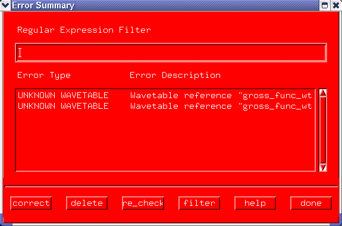
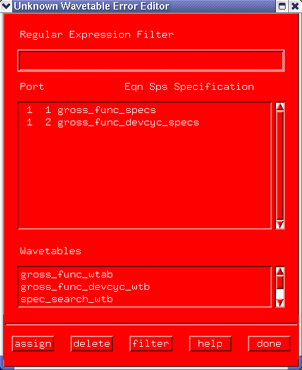

Error Checking Facilities
Each time you perform an upload an error check is carried out on your specification set file and its related files (equation and wavetable). Should you have an error, caused by editing the equation or wavetable file - renaming or changing a wavetable or equation set, for example, a screen similar to that of the figure below appears.

This screen - together with an error message in the report window - gives a brief description of the nature of the error.
From within this screen the main choices you have are,
- Correct the errors
In the case of the figure above (where a wavetable name has been changed), this results in an additional screen (the figure below) where you can assign all the specification sets to the new wavetable.

The second choice you have is to,
- Delete the errors.
In this case, all specsets associated with the error are deleted.
Once you have either corrected the errors, or deleted the source of the errors, the first screen shown above will be empty.